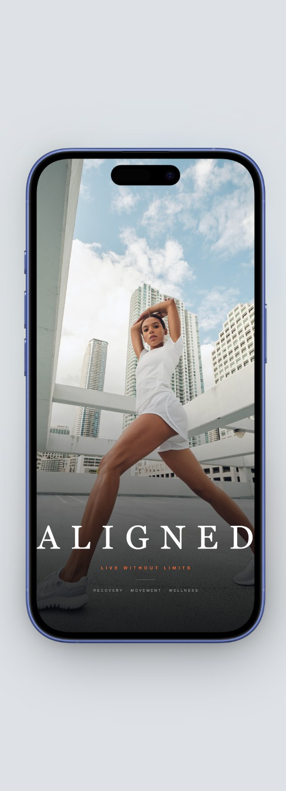
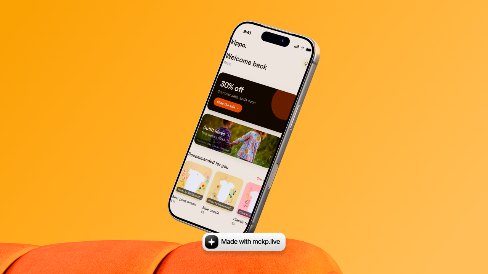

Aligned
Turned a physical therapist's clinical expertise into a guided recovery app people actually stick with.
View case studyAvailable for select projects
I design and ship digital products for health & wellness, lifestyle, and tech brands—from concept to live product.
Scroll To View More ↓
I build transformative digital experiences for health & wellness, lifestyle, and tech brands by blending AI, design, and technology.
Strong branding sets you apart in a crowded market and turns first impressions into lasting loyalty.
I design and build digital products that feel as good as they look—combining thoughtful UX with the technical execution to actually ship them.
Front-end to back-end, I build fast, reliable products that work great on every device. Performance and user experience matter just as much to me as the code underneath.
AI is part of how I build, not just how I sketch ideas—I use AI-native tools for engineering, data, prototyping, and shipping to move faster without cutting corners.
Every screen is designed around how people actually think and move through a product—clear, intuitive, and built on research, not guesswork.
My focus is health & wellness, lifestyle, and tech—from fitness and recovery to skincare to the tools I build. Industries I don't just design for—I live in them.

Turned a physical therapist's clinical expertise into a guided recovery app people actually stick with.
View case study
Resolved a navigation-hesitation problem parents hit in testing, validated across two rounds of usability studies.
View case studyTurned raw, live NYC 311 data into filterable charts and a map that surface real reporting patterns by borough and complaint type.
View case studyAutomated support ticket triage—categorization, urgency scoring, and SLA-risk flagging—so specialists open an already-prioritized queue.
View case study“Yadan brings rare clarity to complex ideas—shaping brands, products, and stories into work that feels both useful and culturally alive.” Creative Partner
Currently Pursuit AI-Native cohort Nonexclusive with FFT Models
I'm Yadan Taino—a Creative Director and Product Designer based in New York City.
I design and ship digital products and brands for health & wellness, lifestyle, and tech—from first concept to live product. Founders and business owners come to me when they don't want a design file and a hand-off; they want the thing built, launched, and true to their brand.
Years of working as a commercial model—campaigns, runway, life in front of the camera—sharpened something most designers never develop: a lived understanding of aesthetics, culture, and how a brand actually feels to the people inside it. These aren't industries I study. They're industries I'm in.
Everything I build has one goal: products that genuinely improve how people move, feel, and show up. That's why my flagship project, Aligned, is a recovery and movement app built alongside a licensed physical therapist—clinical expertise, designed and shipped.